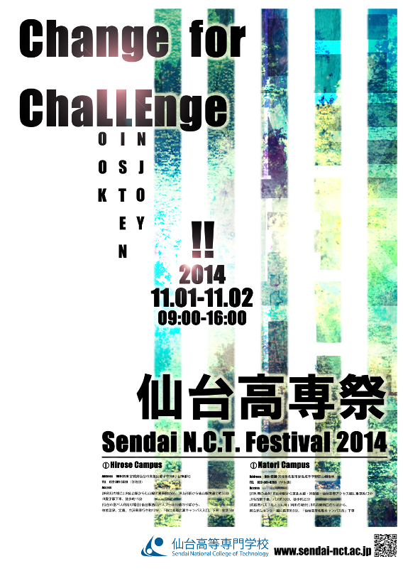

Change for ChaLLEnge
前身の仙台電波高専と宮城高専が仙台高専へと統合され、本年度はその完成年度を迎えましたので、「この変化を活かして新たなことに挑戦しよう」、すなわち、新高専の完成を機に、我々学生もいろいろなことに挑戦し、積極的に変化していこうという意味を込めてこのようなテーマを掲げました。また、ChaLLEngeにおける大文字表記の「LLE」は「Look、Listen、Enjoy」の三つの単語の頭文字を表しており、学生が「見て、聞いて、楽しむ」ことで、より良い方向へ変化しようという強い意志と、来場者が「見て、聞いて、楽しめる」という高専祭の特徴の意味を持たせています。
